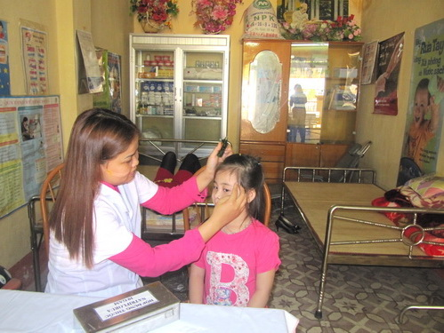

Tuyên truyền phòng chống cận thị học đường
Chủ đề tháng 10:
Tuyên truyền phòng chống cận thị học đường
Năm học 2012-2013
- Kính thưa cô giáo phạm Thị Bích - Hiệu trưởng nhà trường.
- Kính thưa cô giáo Nguyễn Thị Phương Nam –Phó hiệu trưởng nhà trường.
- Kính thưa các thầy cô giáo nhà trường.
- Kính thưa toàn thể các thầy giáo, cô giáo đoàn thực tập sư phạm trường Cao đẳng Sư phạm Thái Nguyên.
- Thưa toàn thể các em học sinh yêu quí !
Cận thị học đường là một bệnh đang rất phổ biến và ngày càng gia tăng. Mỗi năm có đến 3 triệu học sinh, sinh viên trong cả nước bị mắc tật này. Khi mắc bệnh thì chỉ ngăn chặn bệnh không nặng lên chứ không khỏi được cho dù được đeo kính hay dùng thuốc cũng không chữa được bệnh khỏi hẳn. Cận thị chỉ dừng lại khi chúng ta 25 đến 30 tuổi. Như vậy mắc bệnh cận thị là mắc suốt đời nên việc phòng bệnh là rất quan trọng.
*Nguyên nhân
+ Do di truyền.
+ Do dinh dưỡng.
+ Do ngồi học không đúng tư thế; do học bài, đọc sách nhìn quá gần trang vở; đọc sách, truyện nhiều giờ liền; sử dụng máy tính, chơi các trò chơi điện tử quá mức khiến mắt phải điều tiết nhiều và không được nghỉ ngơi.
+ Đọc viết ở nơi thiếu ánh sáng.
+ Đọc sách tư thế nằm ngửa, không đủ ánh sáng.
+Tự ý đeo kính cận không đúng tiêu cự.
* Biểu hiện:
- Nhìn xa không rõ, nhìn không rõ chữ trên bảng.
- Luôn chúi đầu về phía trước khi đọc viết.
- Thấy đau đầu, nhức mắt và luôn muốn nheo mắt dù không buồn ngủ.
- Khi đọc viết phải nhìn rất gần, xem ti vi phải ngồi sát màn hình mới thấy được hình ảnh.
* Phòng tránh các em cần thực hiện tốt :
- Không đọc sách, đọc truyện ở nơi thiếu ánh sáng.
- Chỗ ngồi học phải đủ ánh sáng.
- Ánh sáng được chiếu từ trái qua phải , không chiếu thẳng vào mắt.
- Không vừa đi vừa đọc.
- Tư thế ngồi học đúng: Hai chân trong gầm bàn hai tay để trên bàn. Không tỳ ngực vào cạnh bàn, ngồi viết khoảng cách từ mắt đến trang vở là 33-40cm.
-Tư thế 3 thẳng: đầu thẳng, lưng thẳng, chữ viết thẳng. Không chơi điện tử, vi
tính, đọc sách, truyện nhiều giờ liên tục.
- Xem ti vi: khoảng cách từ chỗ ngồi đến màn hình ít nhất là 3m.
Ngoài ra chúng ta cần có thời gian cho mắt nghỉ ngơi xen kẽ với học tập để mắt không bị mỏi, khô.
- Chế độ dinh dưỡng và thể dục thể thao cũng rất quan trọng, vừa giúp cho cơ thể khỏe mạnh và giúp cho đôi mắt trong sáng.
- Các rau quả màu đỏ: gấc, cà chua, quả hồng chín đỏ chứa nhiều vitamin A rất tốt cho mắt.
- Khi đi ngoài trời nên đội mũ, nón để ánh sáng không rọi trực tiếp vào mắt.
* Bên cạnh những điều không nên trên các em cũng cần chú ý:
- Nhìn bảng không rõ.
- Đọc sách thấy chữ mờ khó đọc.
- Liên tục dụi mắt, mỏi mắt tuy không buồn ngủ.
- Thấy khô mắt
Các em hãy chia sẻ với bố, mẹ hoặc thầy cô giáo để được theo dõi kịp thời về mắt,
việc phát hiện kịp thời thì việc đeo kính hoặc dùng thuốc sễ giúp thị lực ổn định.
Như vậy bài tuyên truyền phòng chống cận thị học đường được dừng tại đây. Tôi xin chân thành cảm ơn Ban giám hiệu nhà trường, các thầy cô giáo, các em học sinh đã quan tâm, tạo điều kiện cho tôi hoàn thành bài tuyên truyền .

Cô: Mai Thị Kim Oanh - Nhân viên y tế nhà trường đang kiểm tra mắt cho học sinh.
(Theo: Mai Thị Kim Oanh.)
|
|